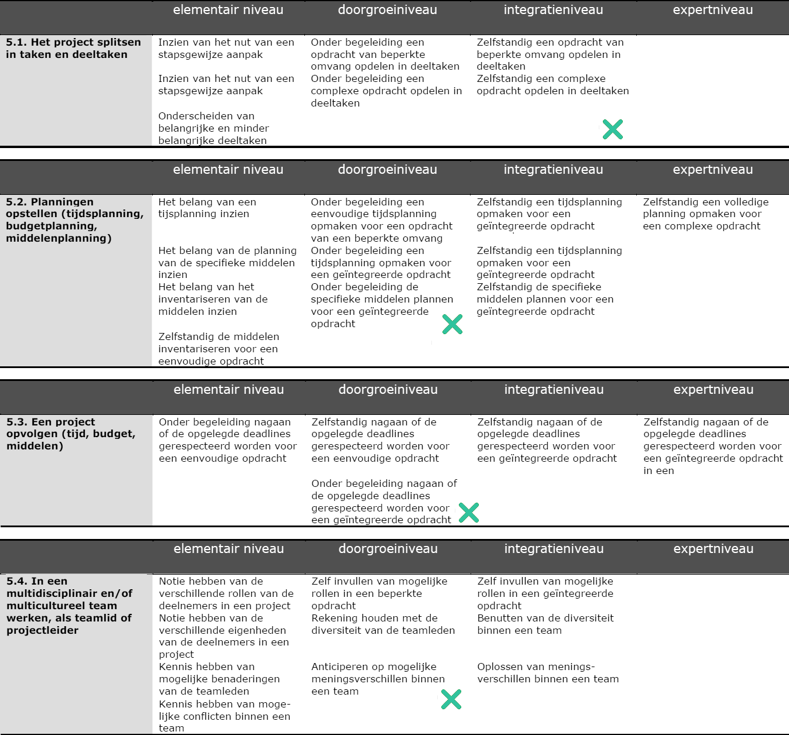
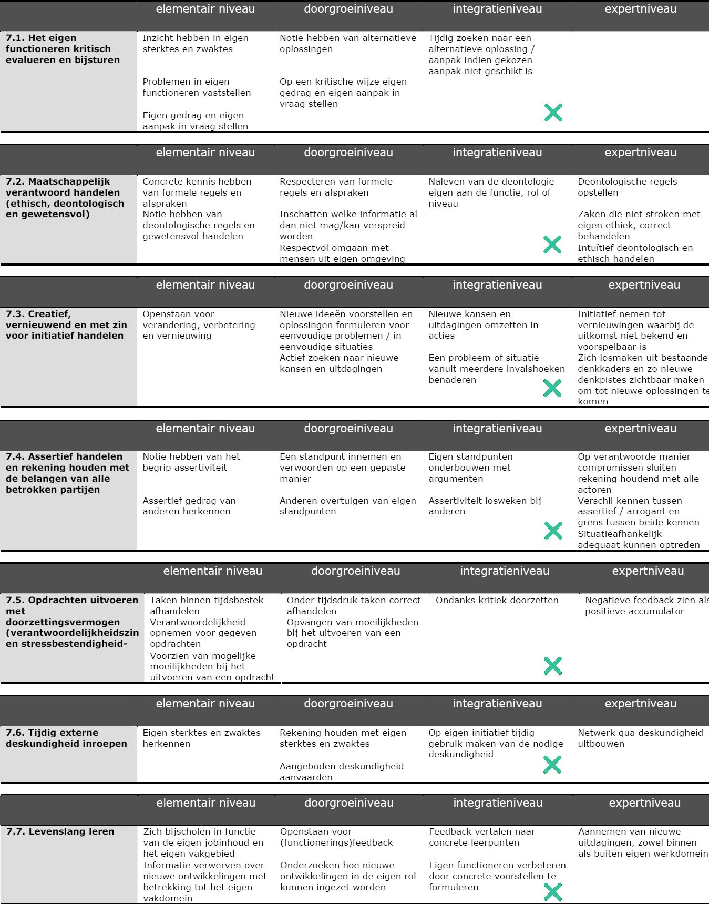

1. Gegevens behandelen
Mijn niveau op het einde van het tweede jaar: Niveau 2
Bewijsstukken die dit aantonen: Presentatie Frans
2. Analyseren
Mijn niveau op het einde van het tweede jaar: Niveau 2
Bewijsstukken die dit aantonen: Relationeel model Technieken voor datamodellering
{kind=link}
3. Oplossingen uitwerken
Mijn niveau op het einde van het tweede jaar: Niveau 2
Bewijsstukken die dit aantonen: Handleiding Cucumber en project Internetprogrammeren Major (mag nog niet gepubliceerd worden)
4. Beheren
Mijn niveau op het einde van het tweede jaar: Niveau 2
Bewijsstukken die dit aantonen: Project Internetprogrammeren Major (mag nog niet gepubliceerd worden)
5. Projectmatig werken
Mijn niveau op het einde van het tweede jaar: Niveau 3
Bewijsstukken die dit aantonen: Groepsopdracht IT en Management Projectmanagementplan
6. Communiceren
Mijn niveau op het einde van het tweede jaar: Niveau 2
Bewijsstukken die dit aantonen: Mensen opleiden en begeleiden: agenda vergadering, vergaderverslag en presentatie les
7. Eigen gedrag aanpassen
Mijn niveau op het einde van het tweede jaar: Niveau 3
8. Kwaliteitsvol handelen

Mijn niveau op het einde van het tweede jaar: Niveau 3